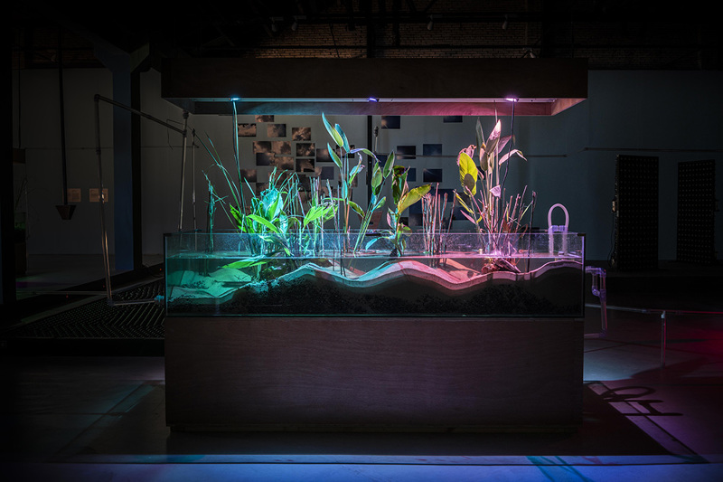
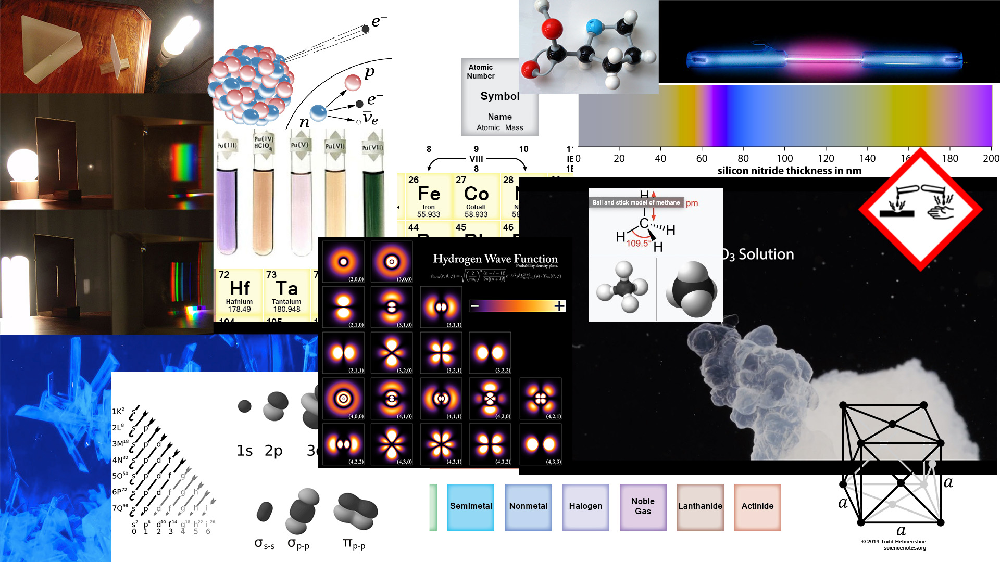

Arda: Conversation Without Common Sense
Arda is a world composed of various talking chemical particles who does not have much common sense toward human society. This project aims to generate a referential model of thinking or value set based on chemical reactions.
The trend in Machine Learning development often is to mimic natural human cognition and behavior. However, with humans manipulating a model's data input, the result prejudices. What would a comparatively objective perspective feel like? If machines have their own thought, ignoring all the "bad common sense" we built up through aging, would they equally view all the carbon-based intellectual beings called "human"? Would it help us better understand what made up the presets in our daily life? While common chatbots try to make fluent conversation with humans, Project Arda will generate values from chemical property data, grammar from equations, and chat response contents from chemical reaction types. Combining ideas in chemistry, the elements that compose the entire physical world we live in, with the method of machine learning, a tool which proficients at producing expected, non-common-sense results, these chatbots may demonstrate an interesting new way of seeing the world.
how would elements react to events in human society?
Precedents
Deep SwampAngel/Devil Bots
Aesthetic & Media
Stereotype of visual representation chemistry, collage with found images from Wikipedia.


Augment reality

Chat


To the Interaction Prototype!
Bibliography
Olson, Arthur J. Perspectives on Structural Molecular Biology Visualization: From Past to Present. Journal of Molecular Biology 430, no. 21 (October 19, 2018). doi:10.1016/j.jmb.2018.07.009.
Calvino, Italo. Cosmicomics. 1968. Print.
Minsky, M. The Emotion Machine: Commonsense Thinking, Artificial Intelligence, and the Future of the Human Mind. New York: Simon & Schuster. 2006.
R. Davis, H. Shrobe, and P. Szolovits. What is a Knowledge Representation? AI Magazine, 14(1):17-33, 1993.
Mayer, Richard E. Cognitive Theory and the Design of Multimedia Instruction: An Example of the Two-Way Street Between Cognition and Instruction. New Directions for teaching and learning, 2002, Vol.2002 (89), p.55-71. San Francisco.
Zandie, Rohola. Cellular Automata: The Atoms of Complexity. Medium. December 27, 2018. https://medium.com/@hilbert.cantor/cellular-automata-the-atoms-of-complexity-3b0e07d8a1b4